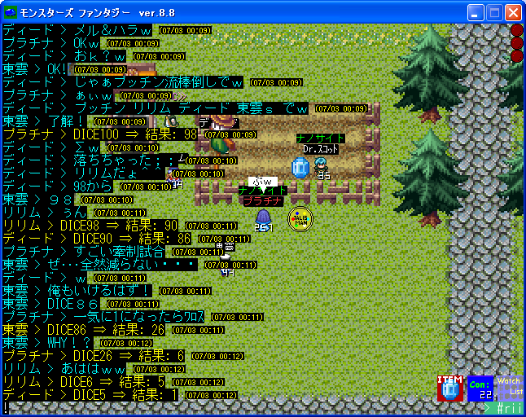
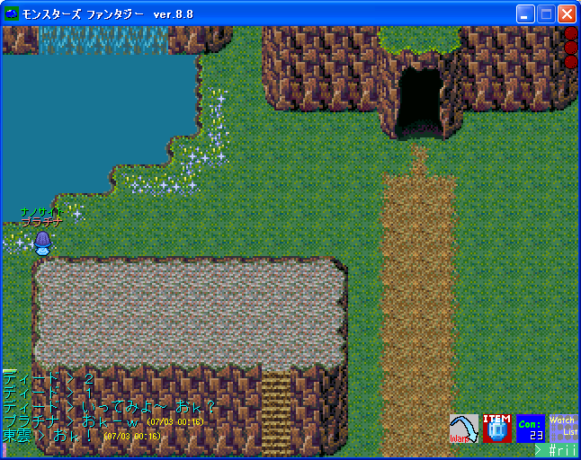
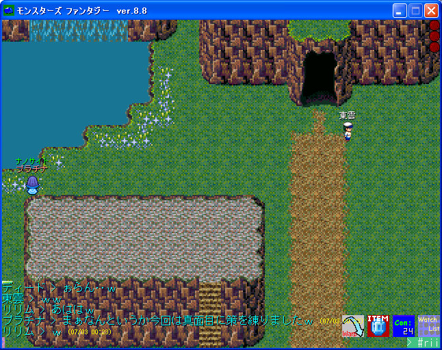
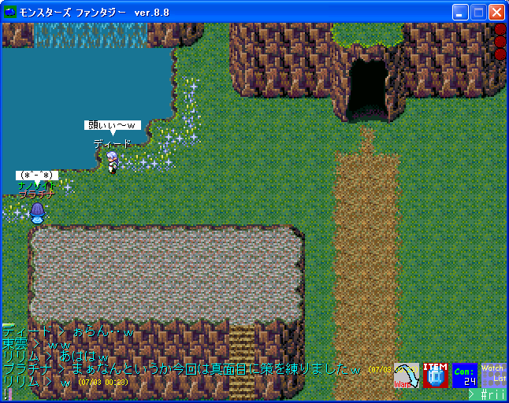
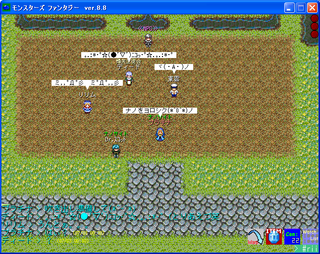

かくれんぼ 2005/7/3
|
プラチナさんが個人的に参加したイベントですが、許可を得て写真を掲載させて 頂きます。夜中に数人でかくれんぼをして遊びました。写真は最終戦の模様しか 残せませんでしたが、メルボンとハラーレ限定で数回行われました。 |
|  |
| 最終戦開始前。まず順番にDICEで乱数を出し、このようにして1になるまで続けて、1を出した人が鬼です。 |
| 鬼はディード様です。10数えてから探しに来ますｗ |
|  |
| 隠れる場所がかなり限定されているので、盲点をついて探しに来そうにない場所を選びました。ちなみに鬼はこの洞窟の中…ｗ |
| 隠れていて(？)動けないので様子がよくわからないですが、プラチナさん以外全員あっさり見つかったようですｗ |
|  |
| 参加者がプラチナさんを探しています。端っこからは通過して行くのが見えるけれど、見事に死角になっていて誰もこっちに来ませんｗ |
|  |
| 結局最後は鬼に見つかってしまいましたｗ木の裏全部右クリックで調べたりご苦労様でした（ぁ |
|  |
| 最後に参加者の皆で記念撮影♪お疲れ様でしたｗ |
| ｢NANOCITES｣ Web Master:ヨハンソン |